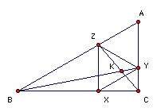

A, B, C is a triangle. X, Y, Z lie on the sides BC, CA, AB respectively, so that AYZ and XYZ are equilateral. BY and CZ meet at K. Prove that YZ2 = YK·YB.
Solution
Use vectors. Take A as the origin. Let AZ = b, AY = c. We may take the equilateral triangles to have side 1, so b2 = c2 = 1 and b.c = 1/2. Take AB to be k b. AX is b + c, so AC must be k/(k-1) c (then AX = 1/k (k b) + (1 - 1/k) ( k/(k-1) c), which shows that X lies on BC).
Hence AK = k/(k2 - k + 1) (b + (k-1) c). Writing this as (k2-k)/(k2-k+1) c + 1/(k2-k+1) (k b) shows that it lies on BY and writing it as k/(k2-k+1) b + (k2-2k+1) ( k/(k-1) c) shows that it lies on CZ. Hence YK.YB = YK.YB= ( k/(k2-k+1) b - 1/(k2-k+1) c) . ( k b - c) = (k b - c)2/(k2-k+1) = 1 = YZ2.
Thank to Achilleas Porfyriadis for the following geometric proof

BZX and XYC are similar (sides parallel), so BZ/ZX = XY/YC. But XYZ is equilateral, so BZ/ZY = ZY/YC. Also ∠BZY = ∠ZYC = 120o, so BZY and ZYC are similar. Hence ∠ZBY = ∠YZC. Hence YZ is tangent to the circle ZBK. Hence YZ2 = YK·YB

© John Scholes
jscholes@kalva.demon.co.uk
11 Apr 2002